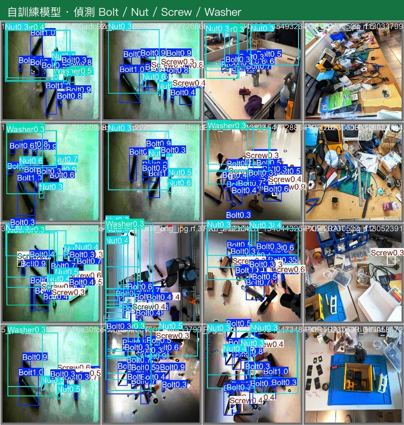

實務操作：三級循序
三個級別，難度遞增：先用標準模型一鍵看結果，再把模型放到邊緣裝置接真實串流， 最後訓練自己的專用模型。每一級都有操作示意（mockup）+ 實際畫面。
Colab 一鍵：直接看 YOLO 偵測結果
全程免安裝、用免費 GPU，素材都是課程內建的公開影片與政府國道即時影像。打開現成 Notebook、按 Run all，就看到偵測結果。
# 課程內建來源：國道即時影像 + CC 授權影片（免設定） frame = grab_frame(STREAMS["動物·羊群"]) # 換成任一場景 model = YOLO("yolo11n.pt") # COCO 預訓練，免訓練 results = model(frame) # 偵測 results[0].plot() # → 標好框的結果影像
操作步驟：開 Notebook → 執行階段選 GPU（沒 GPU 用 CPU 也行）→ Run all → 看各場景偵測結果。
點上方按鈕只需 Google 帳號（不需 GitHub 帳號）→ 開啟後按 Run all 即可執行；要保留改動就「檔案 → 在雲端硬碟中儲存副本」。實際結果畫面見 第 4 章 場景示範。
註：「進階：YouTube 串接」的 YouTube 直播在 Colab 上可能受 Google 對資料中心 IP 的限制；課程主場景已改用國道即時 ＋ 內建影片，最穩定。
把 YOLO 放到 Raspberry Pi，接真實道路串流
訓練在雲端、推論在現場。現場可以是 Raspberry Pi，也可以是你自己的電腦。把模型匯出成 NCNN 放到 RPi、或直接在筆電上跑，接即時影像就能現場偵測。 下面是台灣公開的國道即時影像——同一條串流，邊緣裝置上的 YOLO 就能即時數車流：
沒有 Raspberry Pi？用你自己的電腦就能跑（Win / Mac / Linux）
筆電 / 桌機就是現成的邊緣裝置，而且比 Pi 快。先照這三步把環境準備好，再選下面任一案例跑：
- 裝 Python：到 python.org 下載 3.10 以上版本安裝（Windows 安裝時務必勾「Add Python to PATH」；Mac 多半已內建
python3）。 - 取得腳本：點下方案例的「取得 *.py」按鈕 → 在 GitHub 頁面右上角按「Download raw file」（下載圖示）→ 存到桌面。
- 開終端機：Mac 開「終端機」、Windows 開「PowerShell」，用
cd切到腳本所在資料夾（例：cd Desktop），再執行下面案例的指令。
第一次執行會跳出相機權限請求 → 按允許（Mac：系統設定 → 隱私權與安全性 → 相機，把「終端機」打勾後重開終端機）。打不開鏡頭就加 --camera 1 換一支；若系統找不到 python / pip 指令，改用 python3 與 python3 -m pip。
案例 1 · 即時交通串流：邊緣數車流
用 YOLO 接國道即時影像或本機影片，即時偵測 + 過線計數。對著國道串流數車流，或用網路攝影機對著馬路。
# 1. 裝套件（一次） $ pip install ultralytics opencv-python lap # 2a. 用國道即時影像數車流（預設） $ python edge_count.py # 2b. 用你的網路攝影機（對著馬路） $ python edge_count.py --source 0 # 2c. 用本機影片檔，並調整計數線位置 $ python edge_count.py --source clip.mp4 --line 0.6 # 視窗即時顯示框 + 過線計數，按 q 結束
案例 2 · 視訊鏡頭玩猜拳：辨識手勢
鏡頭對著你的手，即時辨識石頭 / 布 / 剪刀，按空白鍵跟電腦對戰。這裡刻意不用 YOLO：手勢的差別在「手指彎不彎」，用 MediaPipe 的手部 21 關鍵點判斷比框更準、更穩，而且免訓練、免資料集——依任務選對工具，正是這門課的重點之一。只要 webcam。
# 1. 裝套件（一次） $ pip install mediapipe opencv-python # 2. 開鏡頭玩猜拳 $ python rps_play.py # 比手勢 → 空白鍵出拳 → 電腦隨機出 → 累積比分；q 結束
登入 Google 查看完整邊緣部署指引
RPi 安裝、NCNN 匯出、接 RTSP、設 ROI 與計數線的逐步指令，登入後檢視。
訓練自己的模型：金屬零件（COCO 沒有的東西）
當標的是 COCO 不認得的東西（產線金屬零件），就要自己訓練。案例用課程內建的 Bolts 資料集（螺栓 / 螺帽 / 螺絲 / 墊圈，YOLO 格式、CC BY 4.0、免任何 API key）。流程：一鍵下載內建資料 → Colab T4 微調 → 在測試影像上推論看結果。
# 1. 下載課程內建 Bolts 資料集（YOLO 格式，免 key） !wget -q ".../datasets/bolts.zip" && unzip -q bolts.zip -d bolts # 2. Colab T4 微調 YOLO("yolo11n.pt").train(data="bolts/data.yaml", epochs=30, imgsz=640) # 3. 在測試影像上推論看結果 YOLO("runs/detect/metal/weights/best.pt").predict("bolts/test/images", save=True)
- 取資料：課程內建 Bolts（645 張，已標好 YOLO 框，CC BY 4.0，免 key、一鍵下載）；進階可換 SteelDS a1/a2/a3（注意 a4/a5 無標註，會訓不出東西）。
- Colab T4 訓練：從 yolo11n 微調，看 mAP 收斂。
- 驗證：在沒看過的測試影像上跑，確認泛化。
- 部署：匯出 NCNN → 回到第二級，放上 RPi 做產線即時計數。
